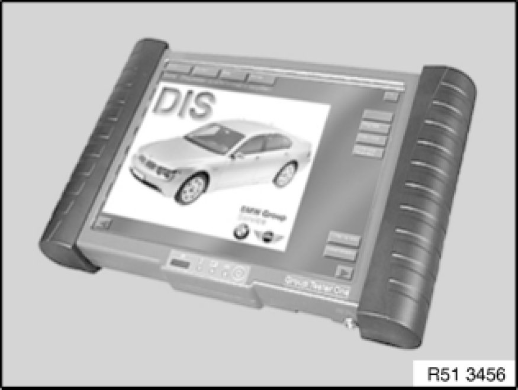
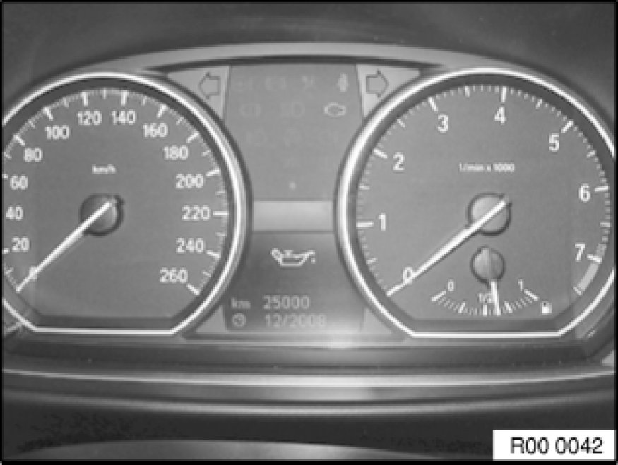
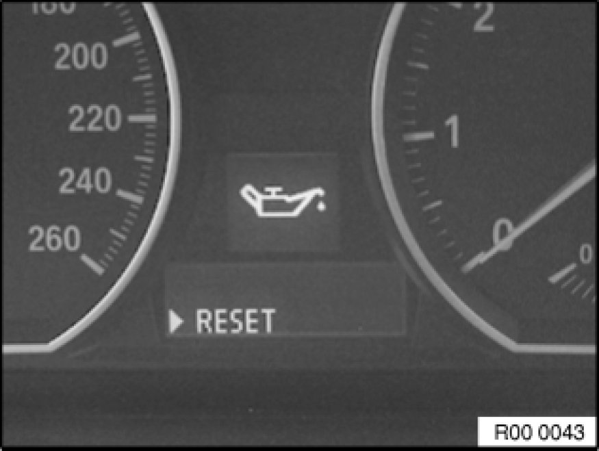
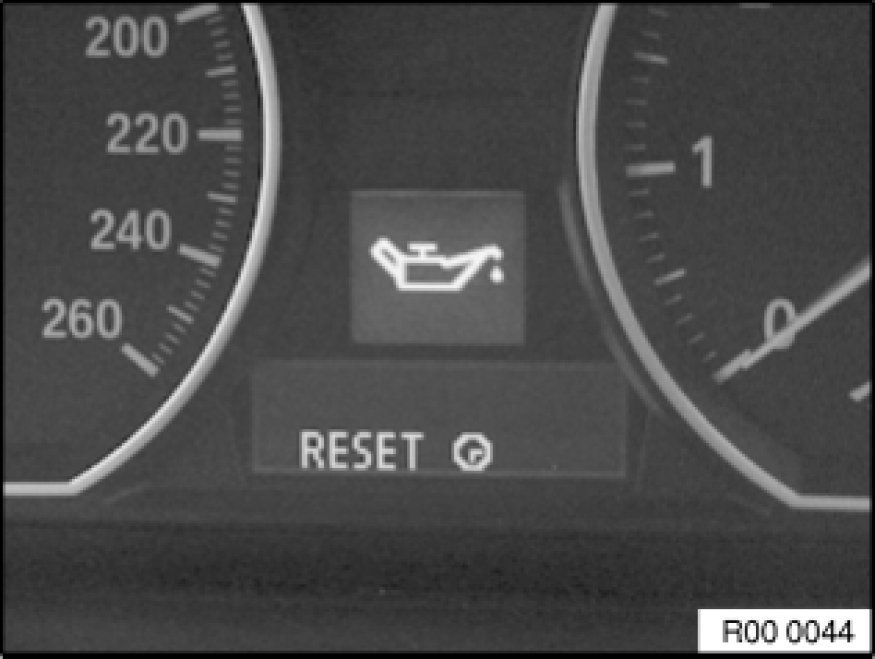
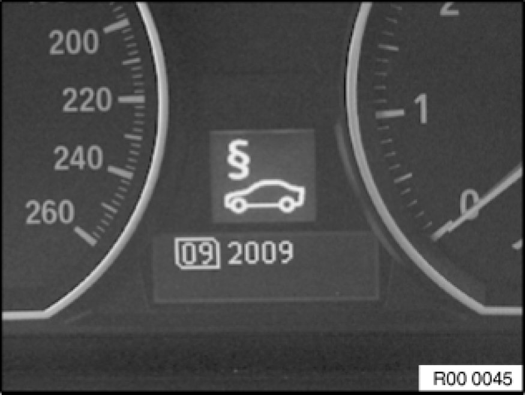

CBS Reset (Condition Based System)
00 00 ... - CBS reset

Important!
It is always recommended to reset the CBS jobs via the diagnosis system. The CBS service jobs can be reset in the car with the on-board computer button on the direction indicator/main-beam switch. It is only possible to code the statutory intervals specific to individual countries with the diagnosis system.
CBS reset with diagnosis system
Important!
To be able to check and/or correct the car's on-board date properly, the diagnosis system requires the correctly set tester system date!
The jobs may only be reset after the service measure has been completed.
The brake pads can only be reset with a new brake pad wear sensor.

The CBS jobs can be reset via the diagnosis system on the following path:
=> Diagnosis
=> Function selection
=> Service functions
=> Maintenance
=> CBS reset

CBS reset in the car
The service jobs can be reset in the car at the instrument cluster. Here, the availability of a service job is reset to 100 % (corresponding to new component). The availability is an internal computing value (not visible to the operator).
Note:
A reset is only possible in the car if there is no Check Control message and if the availability of the service job is below 80 %.
On-board date must be correctly set.
Resetting of a service job must always be carried out after a service measure has been completed.
The resetting procedure is aborted by a timeout or a terminal change.

Switch on ignition.
Press the trip odometer reset button for approx. 10 seconds until the 1st service job appears in the LC display.
The upper display in the speedometer is illuminated by a service symbol (e.g.: an oil can denotes an oil change).
The lower display in the speedometer indicates the time or distance remaining until the next service (e.g.: 25000).
Set desired maintenance scope with the rocker switch on the direction indicator/main-beam switch.

To reset, press the on-board computer button on the direction indicator/main-beam switch until the message "RESET" appears.
Resetting is confirmed by pressing the on-board computer button for a slightly longer period.

A clock is displayed during resetting.
A check/tick is displayed after "RESET" on successful resetting.
Repeat the procedure for each additional service which is to be reset.

The month and year are displayed in order to reset the statutory vehicle inspection.
Press on-board computer button.
Change month with rocker switch on direction indicator/main-beam switch.
Press on-board computer button to confirm.
Change year with rocker switch on direction indicator/main-beam switch.
Press on-board computer button to confirm.